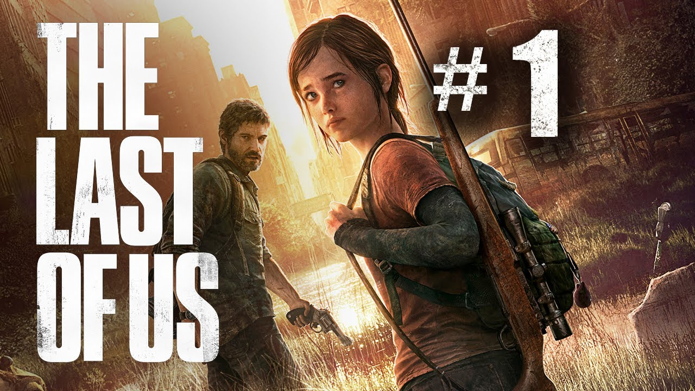

The Last of Us Part 1

Release & Platform
Datum: 2 september 2022
Platform: PS5
The Last of Us wordt mede door de uitmuntende storytelling en gameplay als een van de beste games
ooit
gemaakt gezien. In de remake belooft Naugthy Dog meer dan alleen een audiovisueel likje verf. Zo
maakt
de game
gebruik van de DualSence’s haptics, krijgt de AI een upgrade en zijn er meer dan 60
toegankelijkheidsopties. En
voor de sadomasochisten onder ons: er komt ook een permadeath-modus.
The Last Of Us Part 2

Release & Platform
Datum: 19 juni 2020
Platform: pc, PS5, Xbox Series X/S
The Last of Us Part II is een post-apocalyptische actie-avonturengame van Naughty Dog. Het verhaal volgt Ellie, vijf jaar na de gebeurtenissen van het eerste deel, terwijl ze worstelt met verlies, wraak en morele keuzes in een gevaarlijke wereld vol geïnfecteerden en vijandige overlevenden. De game staat bekend om zijn indrukwekkende graphics, realistische animaties en meeslepende verhaal, dat emoties en moeilijke beslissingen centraal zet.
Dankzij intense stealth- en combat-mechanieken voelt elke confrontatie spannend en betekenisvol aan.
Counter Strike 2

Release & Platform
Datum: September 27, 2023
Platform: Computer
Counter-Strike 2 is de nieuwste evolutie van de legendarische first-person shooter serie van Valve. Het bouwt voort op alles wat fans van CS:GO kennen, maar dan met moderne technologie zoals de Source 2-engine, waardoor graphics,
geluid en physics een flinke upgrade krijgen. Spelers kunnen nog steeds kiezen tussen Terrorist en Counter-Terrorist, bomb-planting en defusing blijven centraal, maar de gameplay voelt vloeiender en realistischer dankzij verbeterde animaties en netcode.
Map-updates,
dynamische belichting en verbeterde audio maken de ervaring intenser. Voor zowel competitieve gamers als casual spelers is het een frisse, spannende stap vooruit in de wereld van tactische shooters.
Valorant
Release & Platform
Datum: 2 juni 2020
Platform: PC, PS5, Xbox Series X/S
Valorant is een tactische first-person shooter van Riot Games die bekendstaat om zijn combinatie van precisie schieten en unieke agent-abilities. Spelers kiezen een agent met speciale vaardigheden en werken samen in teams om doelen te behalen, zoals het planten of ontmantelen van een spike.
De game draait om strategie, teamplay en nauwkeurige aiming, vergelijkbaar met Counter-Strike, maar met een extra laag van karakter-specifieke krachten. Valorant blijft populair in de e-sportswereld dankzij regelmatige updates,
nieuwe agents en competitieve rankings.
FC 26
Release & Platform
Datum: September 26, 2025
Platform: PS5, Xbox series en Pc
FIFA 26 (ook wel FC 26 genoemd) is de nieuwste editie van de populaire voetbalgame van EA Sports. De game biedt realistische graphics, verbeterde animaties en vloeiende gameplay. Je kan spelen met clubs van over de hele wereld, deelnemen aan competities, en je eigen team samenstellen in Ultimate Team. FIFA 26 legt nog meer focus op tactiek, realisme en online competitief spelen,
waardoor het zowel casual spelers als e-sporters blijft boeien.
Wil je meer lezen? Ga naar:
www.eurogamer.nl